01
見本を、先にお届け
食べログやInstagram、今のホームページなど、お店の公開情報をもとに見本を作り、スマホ画面の画像でお送りします。打ち合わせや原稿の準備はいりません。
見本の制作は無料
飲食店専門 ホームページ制作
お店のURLを送るだけで、ホームページを先に作ってお届けします。見てから決めて、ご不要ならそのままで大丈夫です。
日本語と英語のページを、セットでお作りします
別途、初期費用5,000円（税込5,500円）。表示価格は税抜です（月額は税込5,478円〜）。最低契約期間は6か月です。
業態に合わせて作り分けた、11店の制作例
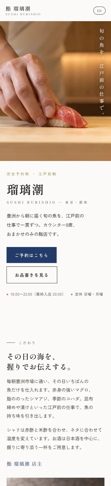
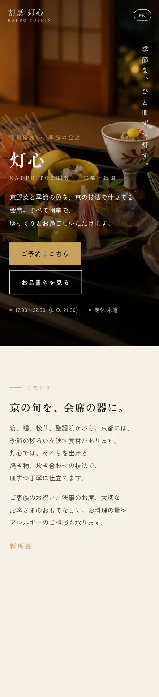
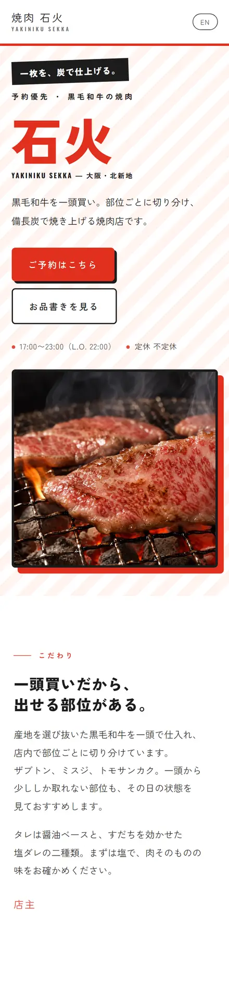
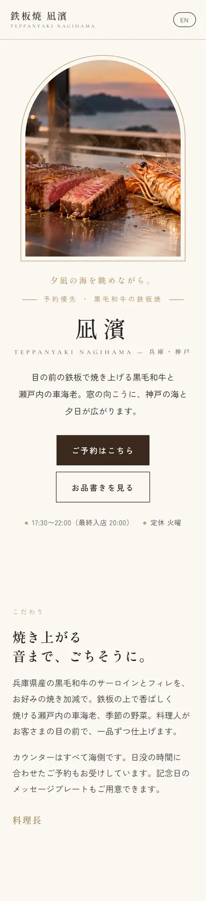
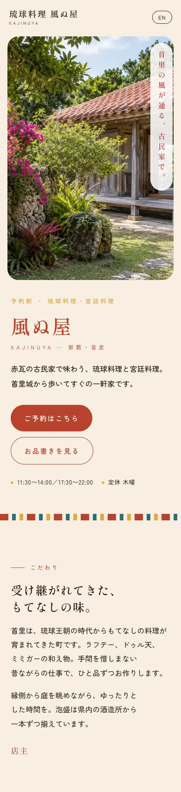
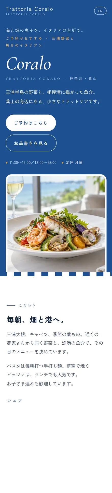
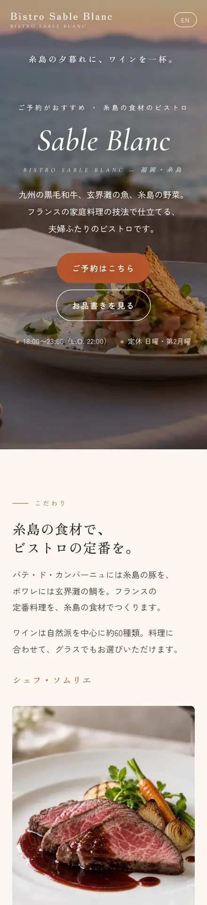
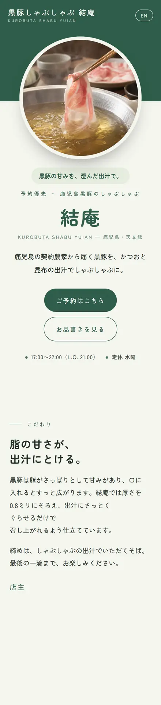
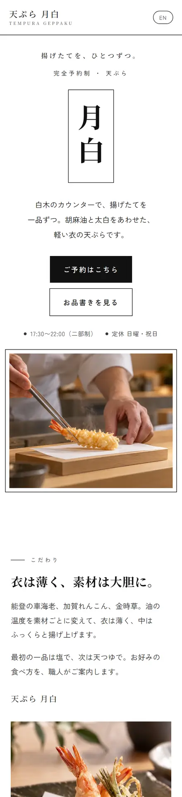
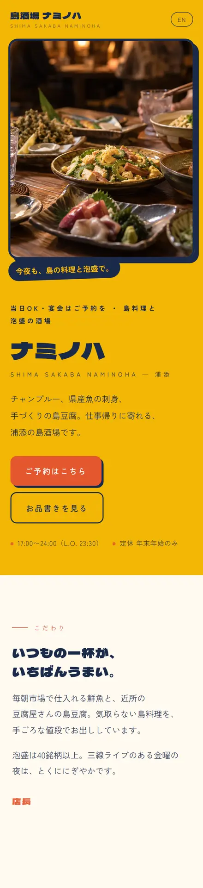
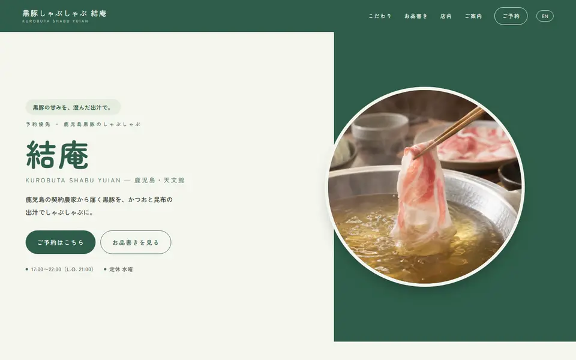
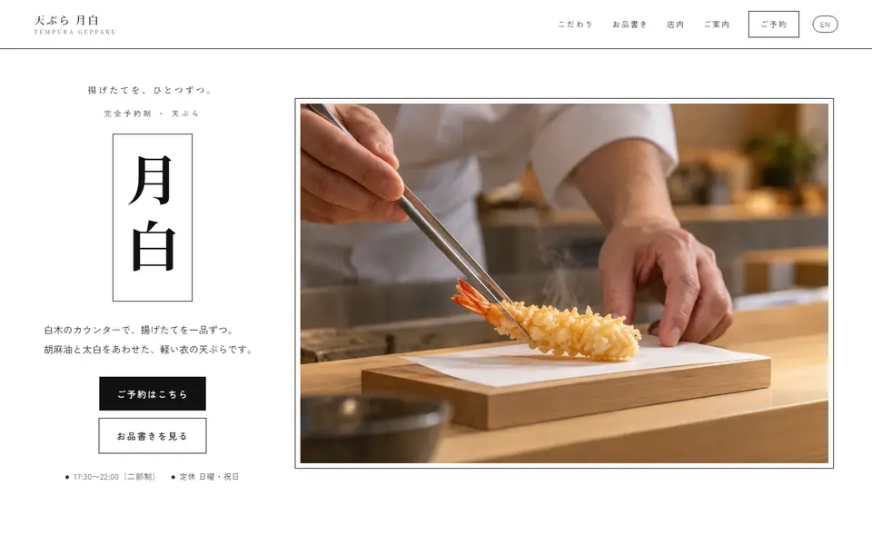
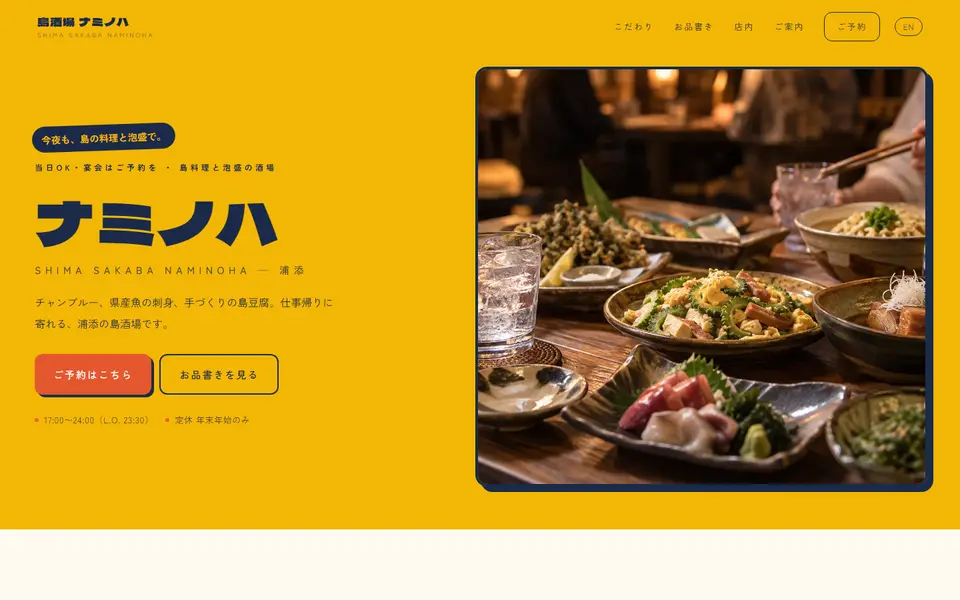
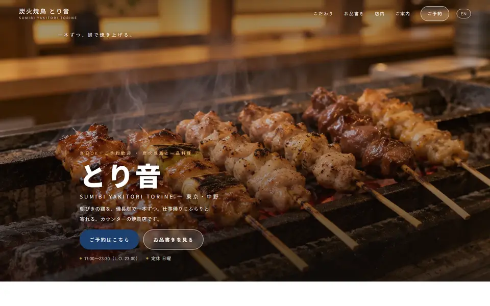
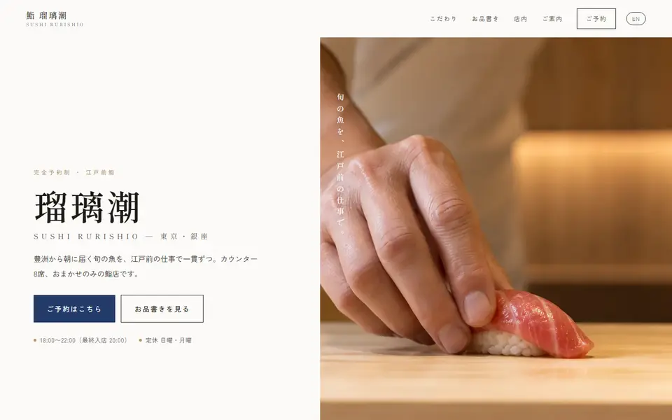
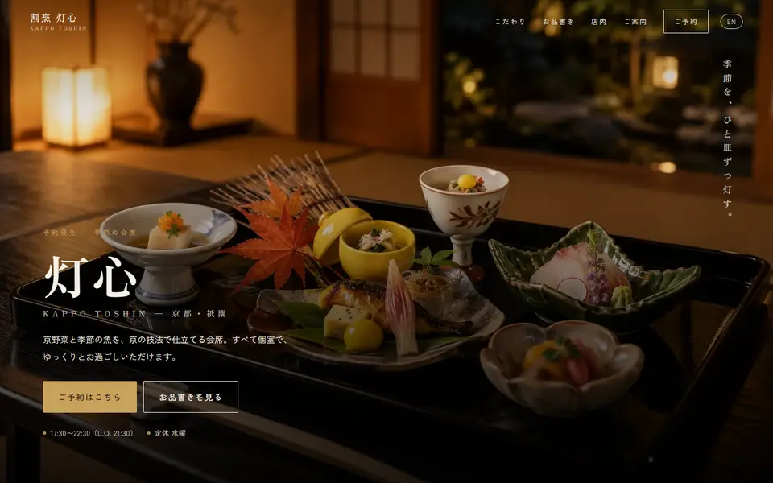
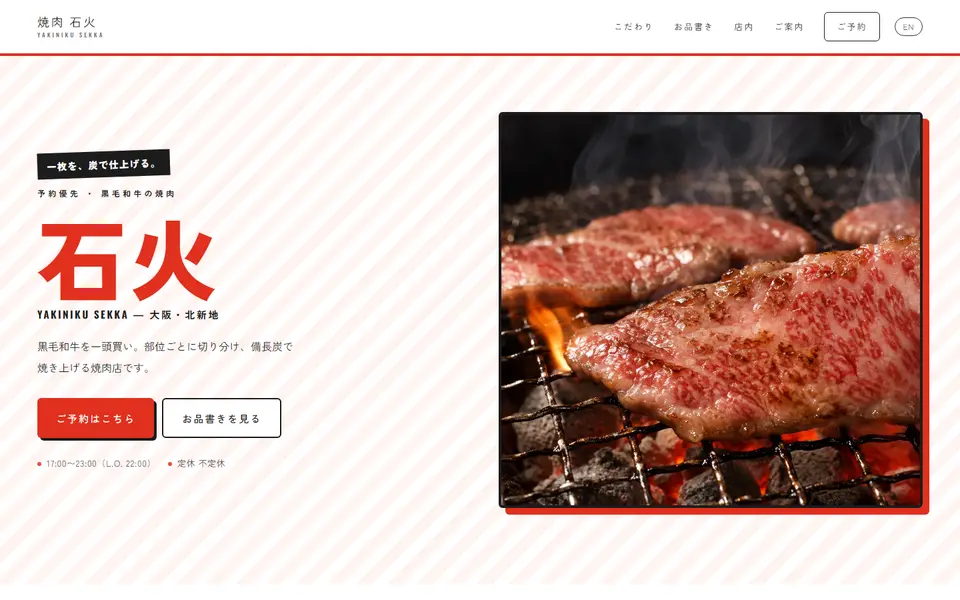
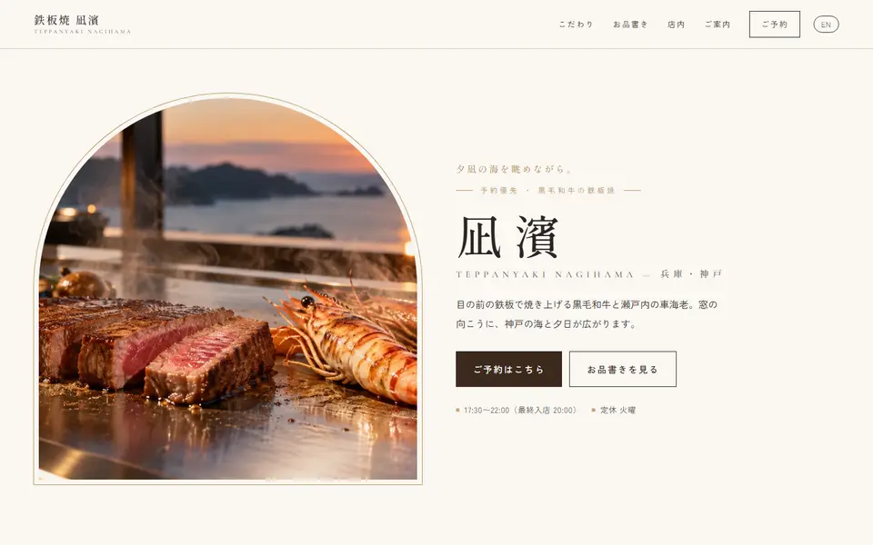
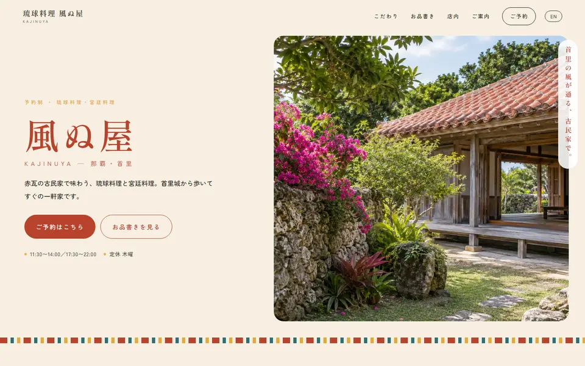
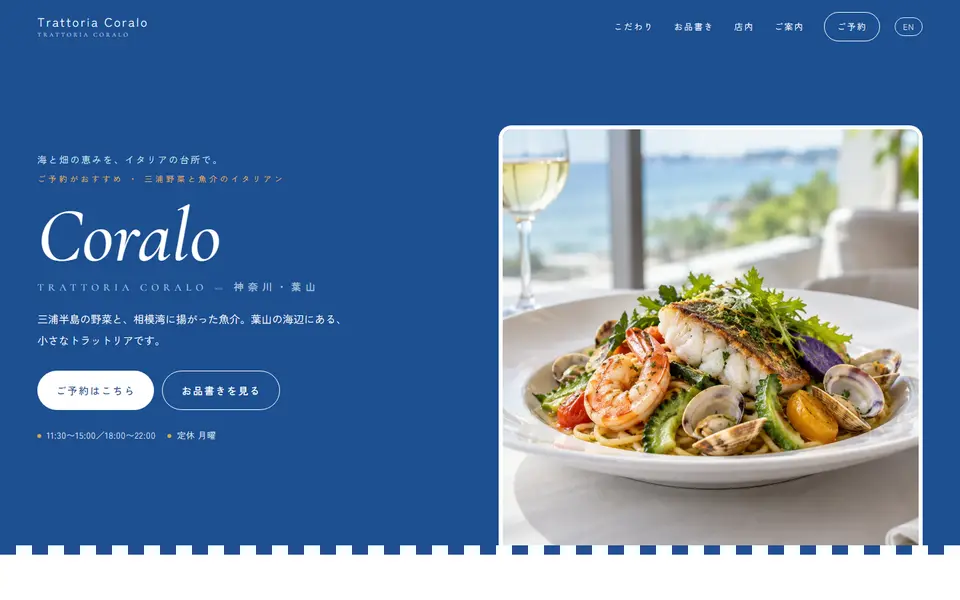
掲載のサイトはすべて架空の店舗のデザインサンプルです。写真は画像生成AIで作成したイメージです。
FEATURE
01
食べログやInstagram、今のホームページなど、お店の公開情報をもとに見本を作り、スマホ画面の画像でお送りします。打ち合わせや原稿の準備はいりません。
見本の制作は無料
02
初期費用は5,000円（税抜）。制作会社に頼んだときにかかる、数十万円の制作費はいりません。月額は、載せたいページ数に合わせて選べます。
初期費用 5,000円（税抜）
03
日本語のページと同じデザインで、英語のページもご用意します。英語版は日本語のページとあわせて1ページと数えるので、追加料金はかかりません。
英語版つき／追加料金なし
04
電話はワンタップでかけられ、LINEやネット予約にもすぐ進めます。メニューはスマホで読みやすく。店名で調べた人に、営業時間や場所が正しく伝わるように設定します。
電話・LINE・ネット予約に対応
GLOBAL
約4,268万人2025年に日本を訪れた
外国人旅行者（過去最多）
+15.8%前の年と
比べて
サキミセでは、日本語のページと同じデザインのまま英語のページをご用意します。メニューや予約の案内まで英語で読めるので、海外のお客様も安心してお店を選べます。
英語版は、日本語のページとあわせて1ページ。英語のページを足しても、料金は変わりません。
※出典：日本政府観光局（JNTO）「訪日外客数（2025年12月推計値）」2026年1月21日発表
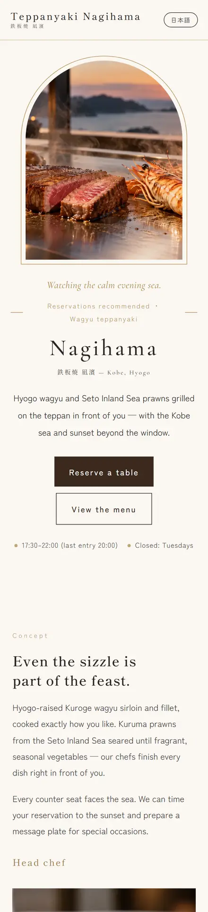
FLOW
STEP 1
食べログ、Instagram、今のホームページなど、お店の情報が載っているURLを、このページの下のフォームからお送りください。URLがないお店は、店名と場所だけでも大丈夫です。
STEP 2
見本ができたら、スマホ画面の画像2枚でお送りします（1枚目は日本語版と英語版、2枚目はページ全体の流れ）。見本はインターネットには公開しません。
STEP 3
気に入っていただけたら、価格や営業時間に間違いがないかを確かめ、載せたい内容のご希望を伺って仕上げます。
STEP 4
ご契約後、ホームページのアドレス（ドメイン）やサーバーの設定まで、こちらで行って公開します。
STEP 3 までは無料。ご返信がなければ、見本は1か月後にこちらで削除します。お手続きは何もいりません。
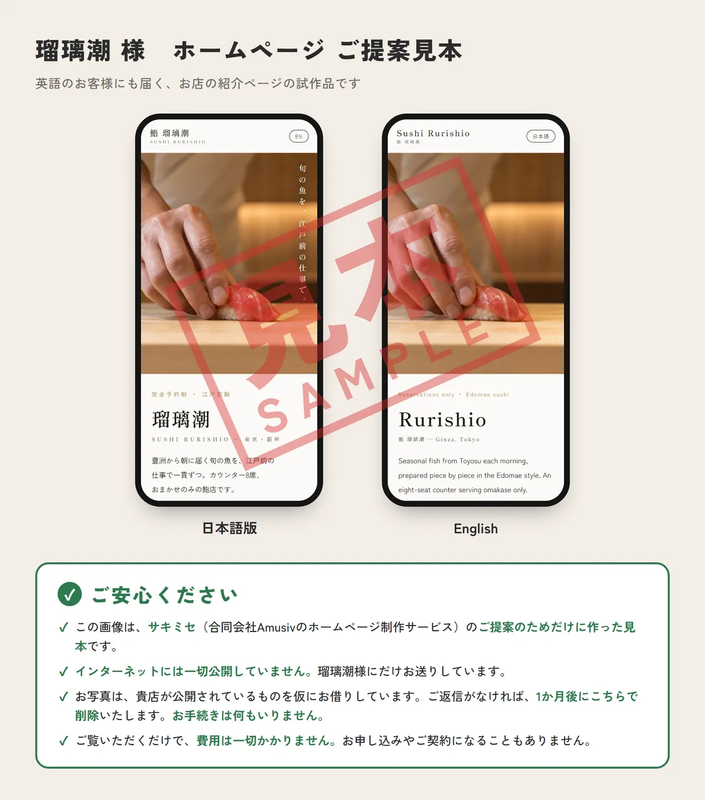
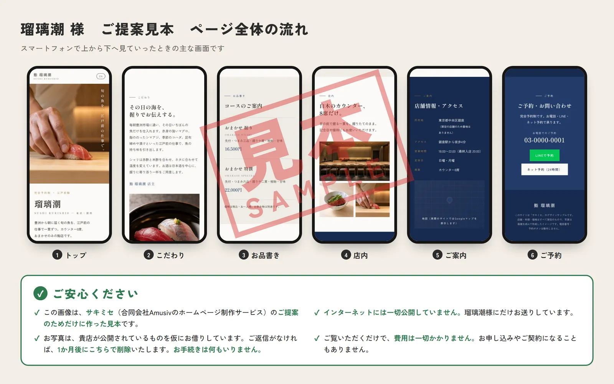
※見本画像の例です（架空の店舗「鮨 瑠璃潮」の場合）。
PRICE
表示価格はすべて税抜です。
月額4,980円
税込 5,478円
お店の魅力から予約の案内まで、1ページにまとめたい方に。制作例のような1ページのホームページです。
おすすめ
月額9,800円
税込 10,780円
メニュー、店内、アクセスなどをページに分けて、詳しく載せたい方に。
月額9,800円＋1ページごとに1,000円
税込 10,780円＋1ページごとに1,100円
宴会・個室・テイクアウトなど、載せたい情報が多い方に。
どのプランにも含まれるもの
英語版のページは、日本語のページとあわせて1ページと数えます。英語のページを足しても、ページ数は増えません。更新の代行は、文章・写真・価格・営業時間・お知らせの差し替えなど、今あるページの中の変更が対象です。ページの追加やデザインの変更は、ご相談ください。
COMPARE
| 項目 | サキミセ | 制作会社に依頼 | グルメサイト掲載のみ | 作成ツールで自作 |
|---|---|---|---|---|
| 初期費用 | 5,000円税抜 | 30万〜50万円が中心 | 0円無料プランの場合 | 0円〜 |
| 月々の費用 | 4,980円〜税抜 | 保守 1万〜5万円 | 2.5万〜5万円＋ネット予約1名ごとに手数料 | 数千円程度 |
| お店の手間 | URLを送るだけ | 打ち合わせ・原稿・素材の準備 | 店舗ページの入力・更新 | 作成も更新もすべて自分で |
| 完成品を見てから決める | できる見本は無料 | 契約してから制作が一般的 | ― | ― |
| 英語のページ | 日本語とセット追加料金なし | プランによる | 媒体による | 自分で翻訳して作成 |
| 予約の手数料 | 0円電話・サイトからの予約 | 0円 | 1名ごとに発生 | 0円 |
※相場は2026年7月時点の公開情報にもとづく当方調べです。個別の契約条件により異なります。
FAQ
はい。お店の公開情報（今のホームページ・グルメサイト・Instagram）をもとに、構成・文章・写真の選定までこちらで行います。見本をご覧いただいたあとに、価格や営業時間などの確認と、載せたい内容のご希望だけ伺います。
はい。フォームで「お店のURLがない」にチェックを入れて、店名とお店の場所をお送りください。メニューや写真など、見本づくりに必要なことはこちらからご連絡して伺います。
いいえ。見本はスマホ画面の画像にしてお送りし、インターネットには公開しません。ご返信がなければ、1か月後にこちらで削除します。お手続きは何もいりません。
見本の段階では、お店がインターネットで公開している写真を仮にお借りして作ります。ご契約後は、お店からいただいた写真に差し替えます。
そのままにしていただくだけで、費用は一切かかりません。お申し込みやご契約になることもありません。
はい。日本語のページと同じデザインで英語のページをご用意します。英語版は日本語のページとあわせて1ページと数えるので、料金は変わりません。見本にも英語版を付けてお送りします。
ご契約後に、初期費用5,000円（税込5,500円）と月額料金がかかります。見本の制作とご提案は無料です。
最低契約期間は6か月です。その後は6か月ごとの更新です。
ご契約から12か月以上たってからの解約では、サイトのデータをお渡しします。12か月未満での解約の場合は、データはお渡しせず、サイトを閉じます。
はい。月5回まで、メールやLINEでご連絡いただければこちらで更新します。文章・写真・価格・営業時間・お知らせの差し替えなど、今あるページの中の変更が対象です。ページの追加やデザインの変更はご相談ください。
トップページを1ページと数えます。メニュー・店内・アクセスなどを別のページに分けると、その数だけページが増えます。英語版のページは、日本語のページとあわせて1ページです。
いいえ、併用をおすすめしています。グルメサイトは新しいお客さまと出会う場所、公式サイトは店名で調べてくれた方の受け皿と、役割が違います。公式サイトからのご予約には送客手数料がかかりません。
お店のURLを送っていただければ、無料で見本を作ります。URLがないお店も、先に相談したい方も、このフォームからどうぞ。
ご依頼ありがとうございます
お問い合わせありがとうございます
見本ができましたら、ご入力いただいたメールアドレスに画像でお送りします。ご不要でしたら、そのままにしていただくだけで大丈夫です。
店名とお店の場所をもとに、見本づくりを進めます。確かめたいことがあれば、ご入力いただいたメールアドレスにご連絡します。
内容を確認して、ご入力いただいたメールアドレスにご連絡します。
受付のメールをお送りしました。届かないときは、迷惑メールのフォルダもご確認ください。
送信できないときは、info@amusiv.co.jp までメールでご連絡ください。